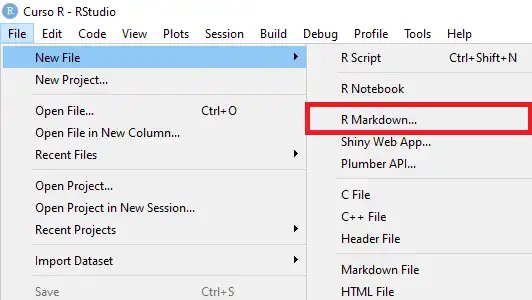
Este tutorial é para você que quer usar o R Markdown para criar arquivos em Word e quer ter maior controle sobre a formatação desses documentos!
É uma dica muito útil, pois você não terá mais que perder tempo formatando o seu relatório depois de escrevê-lo, ele já sairá estilizado e formatado do jeito que você quiser!
Então, vamos ao tutorial:
- Abra o RStudio e crie um arquivo R Markdown.
- Selecione a opção Word como formato de saída.
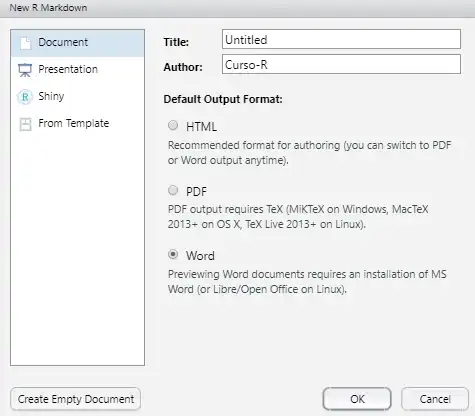
Salve o arquivo.
Dê um Knit, apertando no botão do canto superior esquerdo (ou Knit to Word).
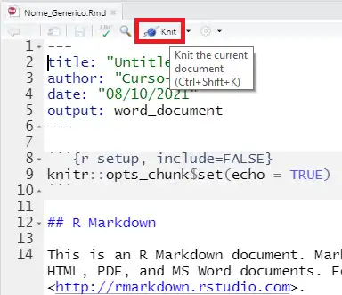
- Um arquivo Word aparecerá na sua tela, como esse:
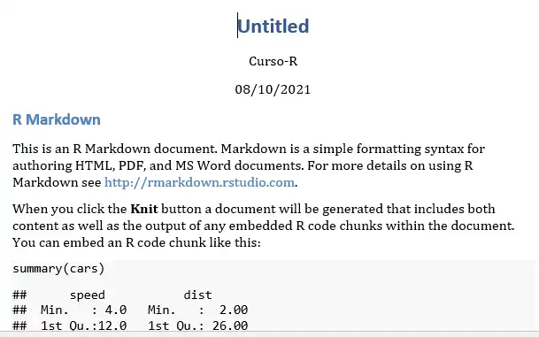
Agora, edite esse arquivo com a formatação que deseja ter em seu relatório!
Clique no botão do canto inferior direito da aba Estilos. Deixe essa aba aberta.
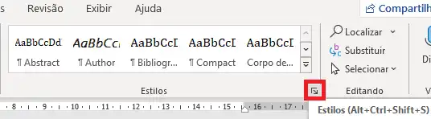
- Clique em cima do título (“Untitled”, na imagem), e note que na aba Estilos a caixa Título será automaticamente selecionada.
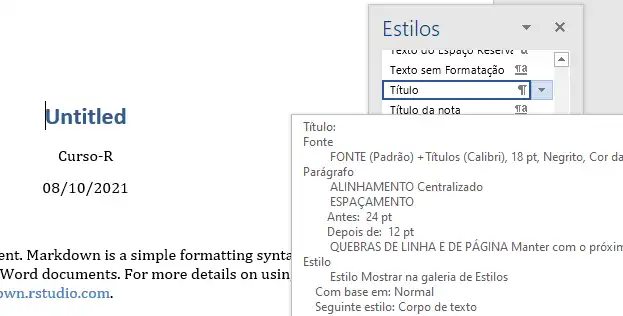
- Clique na seta à direita da caixa Título, e então, em Modificar.
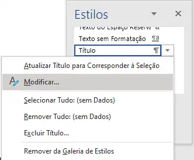
- Edite a formatação do jeito que preferir. No nosso exemplo, ficou assim:
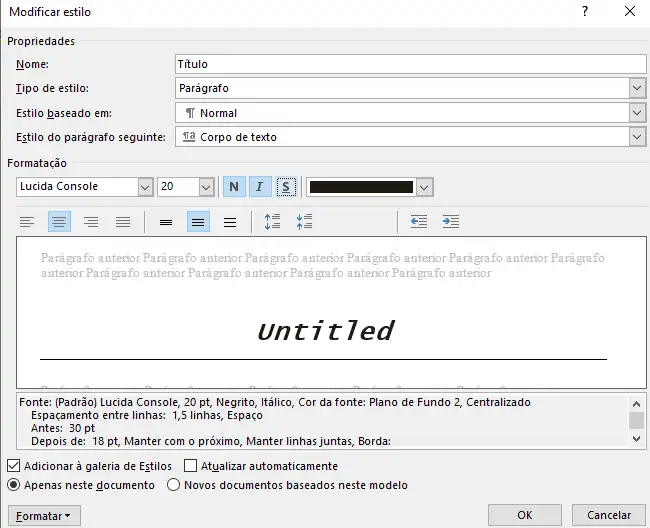
Quando terminar a edição, clique em Ok no canto inferior direito.
Para editar outro elemento do texto, basta clicar em cima desse elemento, e a caixa do elemento será automaticamente selecionada na aba Estilos. (na imagem exemplo, clicamos no link “http://rmarkdown.rstudio.com” e na aba “Estilos” a caixa de Hiperlink foi automaticamente selecionada)
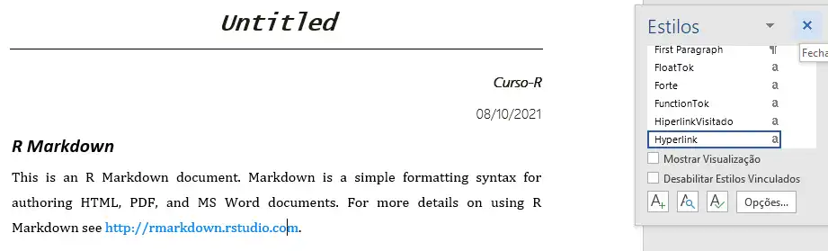
Prossiga como anteriormente, clicando na seta à direita da caixa, e então, em Modificar.
Quando a formatação estiver do jeito que você quiser, salve o arquivo. Aqui estamos usando o nome Template_1.docx. Feche o arquivo.
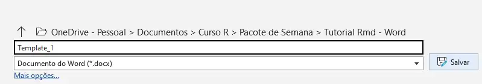
Voltando ao RStudio, crie outro arquivo R Markdown, com Word como formato de saída.
Escreva o seu relatório.
Edite o começo do texto, especificando o seu arquivo de referência (sim, o arquivo que você acabou de editar!), ele deve ficar assim:
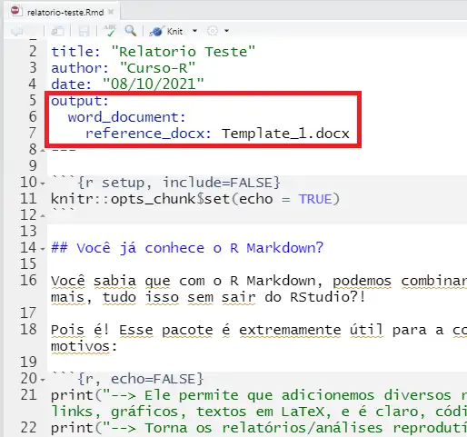
Salve o arquivo.
Dê um Knit, apertando no botão do canto superior esquerdo (ou Knit to Word).
Prontinho! Aparecerá na tela o arquivo Word com o seu relatório personalizado como no arquivo de referência!
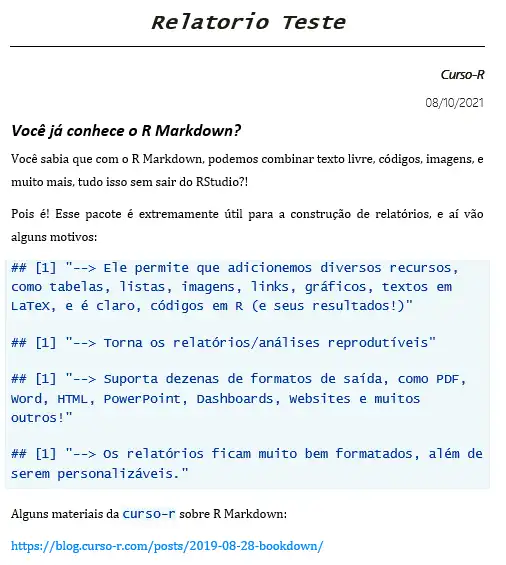
Obs: Antes de apertar o botão Knit, certifique-se de que o arquivo Word está fechado. Se não, aparecerá um erro na tela do R.